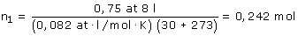
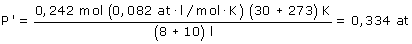
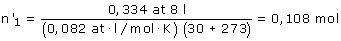
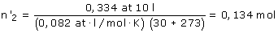

Calculamos la cantidad de gas que hay inicialmente en el recipiente 1:
 |
 |
Al poner en comunicación los dos recipientes los 0,242 mol de gas que hay en total se repartirán en un volumen total de 18 l haciendo una presión P':
 |
 |
Ambos recipientes tendrán la misma presión: 0,334 at. Calculamos la cantidad de gas en cada uno
 |
 |
Cambio en la cantidad de gas del recipiente 1:
Δn1 = n'1 - n1 = (0,242 - 0,108) mol = -0,134 mol
El signo negativo indica que ha disminuido la cantidad de gas (Ha pasado al otro recipiente)
Cambio en la cantidad de gas del recipiente 2:
Δn2 = n'2 - n2 = (0,134 - 0) mol = 0,134 mol
El signo positivo indica que ha aumentado la cantidad de gas (Ha llegado del otro recipiente)